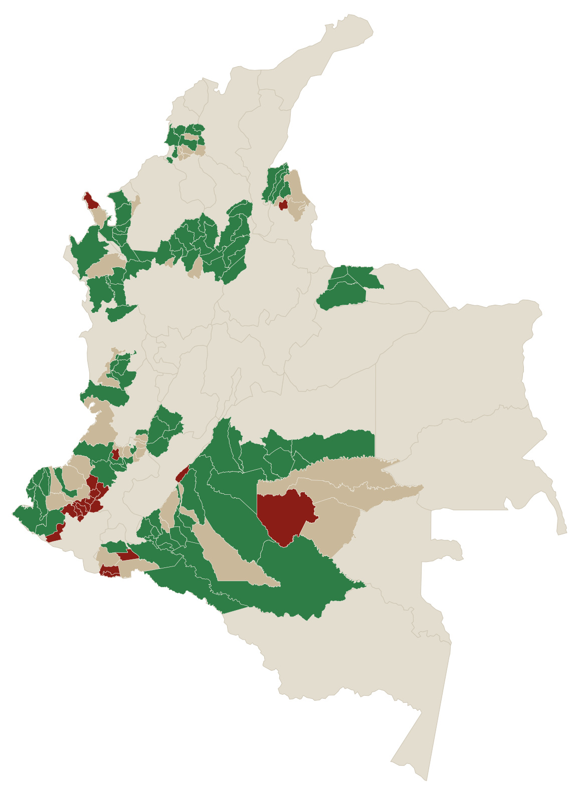
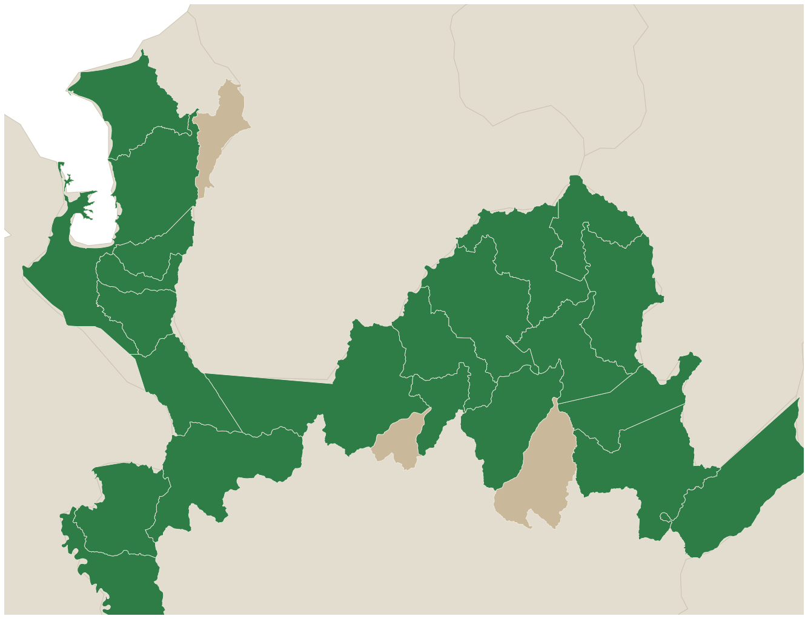
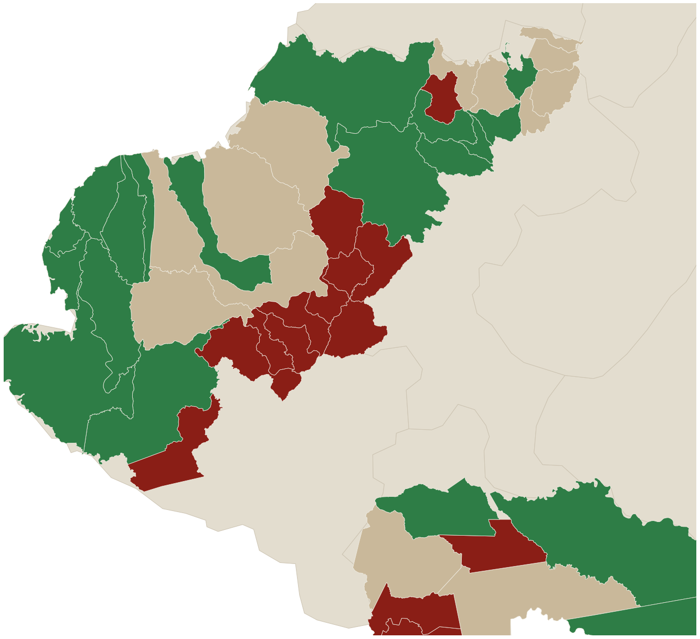
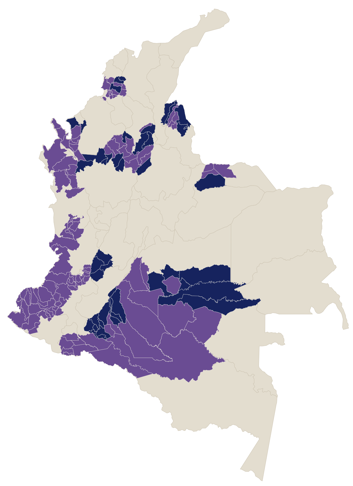
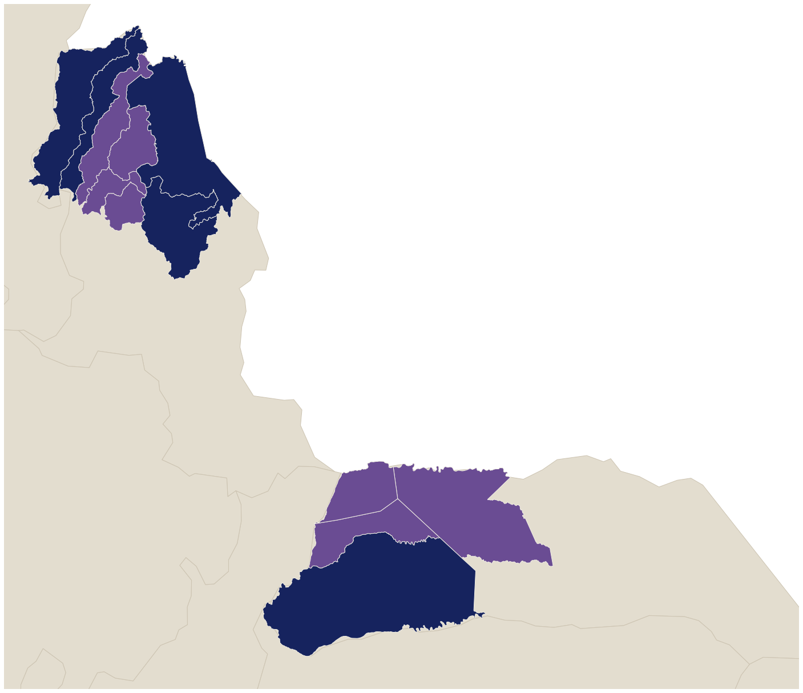

150 municipios CITREP —los más golpeados por la guerra, en riesgo electoral según la MOE—. Así quedó la 1ª vuelta:
% de votos válidos · + 2,4% voto en blanco · preconteo Registraduría.
Cepeda y Abelardo se llevan 9 de cada 10 votos del conflicto.
En 124 de 150 municipios la izquierda subió de 2022 a 2026. La guerra no la castigó: en promedio, la premió.

Municipios que Petro había perdido en 2022 y que la izquierda volvió a ganar en 2026. Casi todo el Bajo Cauca está en verde.

También cedieron Suárez −7, Argelia −5 (Cauca) y Puerto Caicedo −5 (Putumayo). Todas cocaleras —y lo que la izquierda perdió no fue a Abelardo: se evaporó.

Abelardo ganó 43 de los 150 municipios (Cepeda, 106). Coinciden con la hegemonía del Clan del Golfo y el piedemonte de las disidencias —el riesgo extremo de la MOE.

El Catatumbo —golpeado por la guerra ELN–disidencias y el desplazamiento de 2025— se volcó a Abelardo: Sardinata 83%, Tibú, Convención. Pero Arauca, feudo del ELN, creció con la izquierda: Arauquita, Fortul, Saravena.
Donde la izquierda retrocedió manda el EMC y el ELN; donde ganó Abelardo, el Clan del Golfo. Son los mismos municipios que la MOE y la Defensoría marcaron en riesgo extremo: 81 en todo el país, 65% más que en 2022. No prueba coerción. Pero que el voto se incline justo donde manda el fusil es un patrón difícil de ignorar.
150 municipios CITREP (Circunscripciones de Paz). Comparamos Petro 1ª vuelta 2022 (escrutinio) con Cepeda 1ª vuelta 2026 (preconteo), como % de votos válidos. "Retroceso" = Cepeda sacó menor % que Petro en ese municipio.
Fuentes: Registraduría (GCS 2022 + preconteo 2026) · MOE (Mapas y factores de riesgo electoral 2026) · CITREP · Defensoría del Pueblo y Pares.